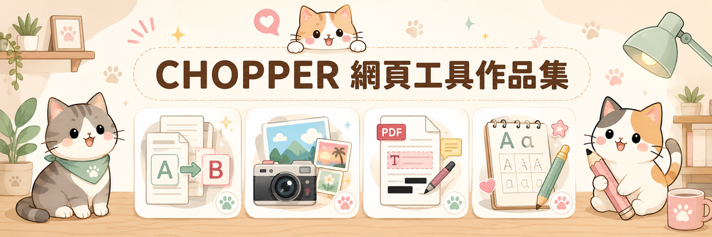

A
https://chopper-coder.github.io/BatchDocumentTextReplacer/
批次文件文字取代工具
- 一次處理多份文件，批次執行文字取代
- 支援 Word、Excel、PowerPoint、文字與多種文件格式
- 可先掃描、預覽修改位置，再決定是否輸出
- 保留原始檔，適合年度、姓名、單位名稱等大量更新

🐱 CHOPPER WEB TOOLS
把日常工作、文件整理、照片紀錄、PDF 編輯、學習練習與數據分析， 做成打開瀏覽器就能使用的實用小工具。
點選卡片中的「前往網站」，即可直接開啟使用。
本作品集中的文件處理工具以瀏覽器本機處理為主， 你的文件不需要上傳到我的伺服器即可使用。 如果你希望完全自行管理，也可以從 GitHub 下載程式碼， 放到自己的電腦、內部網路或自己的網站上使用。